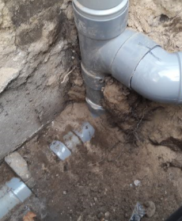
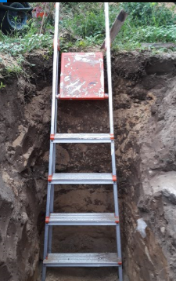
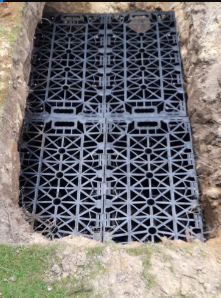

Hemelwaterafvoer
Laatst bijgewerkt 13-augustus 2017, SM
Onderdeel van Woning: Op_Weg_Naar_Energie_Neutraal_Wonen
Inleiding
Het afkoppelen van regenwater van het riool is niet direct merkbaar in de energie-rekening van het huis. Toch geeft afkoppeling wel degelijk een reductie van de totale gemeenschapskosten en daarmee reduceert afkoppeling ook de verspilling van energie.
Afkoppelen was zeker niet het eerste dat bij ons opkwam toen we begonnen met het energie neutraal maken van onze woning, maar gestimuleerd door een gemeentelijke subsidie zijn we er toch serieus over gaan nadenken.
Diverse gemeenten geven subsidie, waaronder de gemeente Mook en Middelaar: waterklaar_gemeente-mook-en-middelaar
Als uitgangspunt hebben we al een minimale verharding in onze voor- en achtertuin, dus daar valt niet zoveel te winnen. Wel is het zo dat het achterterras wordt afgewaterd op het riool. In eerste instantie dachten we er aan om de regenpijpen door te zagen en via de zijkant van het perceel naar een grindkoffer midden in de tuin te leiden.
Nadat we dat plan hadden ingediend bij de gemeente, kwam een medewerker van de gemeente meekijken. Deze vond de plannen op zich goed,maar vroeg meteen waarom we ook niet het terras achter afkoppelde. We vertelde dat we er wel over hadden nagedacht, maar dat we gezien de lage ligging er geen goede oplossing voor hadden (het terras kon niet worden afgevoerd op de geplande grindkoffers, te ver weg). Gestimuleerd door de medewerker van de gemeente zijn we toch nog eens gaan zoeken en nadenken. Het oorspronkelijke idee dat infitratiekratten onbetaalbaar waren moesten we verlaten en daardoor ontstond een veel beter idee waarin we wel het achterterras konden afkoppelen.
Uitvoering
Onze eigen uitvoering is hier te zien: Uitvoering_Hemelwaterafvoer.html
In totaal is 156.3 m2 afgekoppeld. Per m2 wordt geadviseerd om 20 liter buffer te maken. Met de totaal 2400 liter die we nu hebben gerealiseerd zitten we daar iets onder. Omdat we hier op zandgrond zitten is dat echter geen enkel probleem.
We hebben geen zandvangers gebruikt, omdat we het oude riool als zandvanger gebruiken.
Bovendien levert dit oude riool nog eens 240 liter extra buffer, als we het een beetje lek zouden maken.
0.055*0.055*3.14*25 = 0.2375
Verbindingselementen tussen de kratten zijn niet nodig.
Verloopstukken om de pijp op de krat aan te sluiten heb je ook niet nodig (bij voorkeur zelfs niet).
Andere zaak om rekening mee te houden, ontluchting van het riool. Na het afkoppelen hebben we synchroon 2 wc's en 2 wasbakken leeg laten lopen en hebben gelet op de overige sifon's, niets te horen dus voldoende ontluchting van het resterende riool.
De afkoppeling | De kuil | De kratten |
 |  | 
|
Resultaten
De eerste waarneming laat zien dat het systeem goed functioneert en dat het water heel snel wordt afgevoerd: Waarnemingen.html
Adressen
Overzicht verkrijgbare infiltratiekratten met maten en prijzen: Infiltratie_Kratten.html
Overzicht Geotextiel: Geo_Textiel.html
Overzicht Zandvangput: Zandvangput.html
Overzicht Zandafvoer: Zandafvoer.html
Overzicht PVC buizen: PVC_Buis.html
Informatief overzicht over afkoppelen regenwater: afkoppelbrochure.pdf
Fimpje over plaatsing van infitratiekratten: youtube: Plaatsing Infiltratiekratten
Kosten zelf plaatsen Infiltratiekratten
Omschrijving | Leverancier | Prijs/Stuk | Aantal | Prijs |
Afvoer overtollige grond, ongeveer 3 kuub | IkSloopGoedkoop | 157 | 1 | 157 |
Infiltratiekratten |
| 12 | 46 | 551 |
Geotextiel |
| 0.46 / m2 | 30 m2 | 21 |
Koppelstukken voor kratten. Veel gemakkelijker om deze niet te gebuiken. |
| 30 | 2 | 0 |
Verbindingsstukken voor kratten vertikaal + horizontaal. Deze zijn helemaal niet nodig. |
| 2 | 30 | 0 |
Allerlei PVC bochten/verloopstukken | Praxis |
|
| 110 |
Zandvanger, niet toegepast omdat bestaande rioolbuizen als zandvanger fungeren. |
| 120 | 2 | 0 |
Rioolbuis 110 -4meter | Gamma (25% korting) | 21 | 2 | 42 |
T-stuk 45gr 110 | Gamma (25% korting) | 7 | 1 | 7 |
Bocht 45gr 110 | Gamma (25% korting) | 4 | 1 | 4 |
Mof 110 | Gamma (25% korting) | 2.5 | 1 | 3 |
Verloop 80 - 110 | Gamma (25% korting) | 3 | 1 | 3 |
Verloop 100 - 110 | Gamma (25% korting) | 3.3 | 1 | 3 |
80 mm regenpijp beugels (set van 2) | Gamma (25% korting) | 3.7 | 1 | 4 |
Bison hard PVC lijm | Gamma | 8.9 | 1 | 9 |
|
|
|
|
|
Speciaal zand rondom kratten. Op enige diepte zit genoeg geel zand. |
| ? | 0 | 0 |
Wifi waternivo meters |
| 5 | 2 | 10 |
Totaal |
|
|
| 924 |
157+551+21+110+42+43=924
Van de gemeente Mook en Middelaar hebben we 1563 Euro subsidie gekregen.
Created with Microsoft Office OneNote 2007
One place for all your notes and information